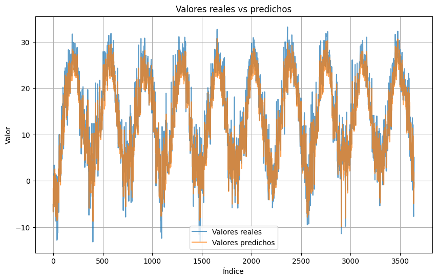

<!DOCTYPE html>


<html lang="es" data-content_root="../" >

  <head>
    <meta charset="utf-8" />
    <meta name="viewport" content="width=device-width, initial-scale=1.0" /><meta name="viewport" content="width=device-width, initial-scale=1" />

    <title>4. Modelar una serie de tiempo con MLP &#8212; documentación de cursos - 1.0</title>
  
  
  
  <script data-cfasync="false">
    document.documentElement.dataset.mode = localStorage.getItem("mode") || "";
    document.documentElement.dataset.theme = localStorage.getItem("theme") || "";
  </script>
  <!--
    this give us a css class that will be invisible only if js is disabled
  -->
  <noscript>
    <style>
      .pst-js-only { display: none !important; }

    </style>
  </noscript>
  
  <!-- Loaded before other Sphinx assets -->
  <link href="../_static/styles/theme.css?digest=8878045cc6db502f8baf" rel="stylesheet" />
<link href="../_static/styles/pydata-sphinx-theme.css?digest=8878045cc6db502f8baf" rel="stylesheet" />

    <link rel="stylesheet" type="text/css" href="../_static/pygments.css?v=8f2a1f02" />
  
  <!-- So that users can add custom icons -->
  <script src="../_static/scripts/fontawesome.js?digest=8878045cc6db502f8baf"></script>
  <!-- Pre-loaded scripts that we'll load fully later -->
  <link rel="preload" as="script" href="../_static/scripts/bootstrap.js?digest=8878045cc6db502f8baf" />
<link rel="preload" as="script" href="../_static/scripts/pydata-sphinx-theme.js?digest=8878045cc6db502f8baf" />

    <script src="../_static/documentation_options.js?v=4936afed"></script>
    <script src="../_static/doctools.js?v=9bcbadda"></script>
    <script src="../_static/sphinx_highlight.js?v=dc90522c"></script>
    <script src="../_static/translations.js?v=f85f4cfb"></script>
    <script>DOCUMENTATION_OPTIONS.pagename = 'sesiones/4_mlp_model';</script>
    <link rel="index" title="Índice" href="../genindex.html" />
    <link rel="search" title="Búsqueda" href="../search.html" />
    <link rel="next" title="Recursos Adicionales" href="../recursos.html" />
    <link rel="prev" title="3. MLP para series de tiempo" href="3_MLP.html" />
  <meta name="viewport" content="width=device-width, initial-scale=1"/>
  <meta name="docsearch:language" content="es"/>
  <meta name="docsearch:version" content="" />
  </head>
  
  
  <body data-bs-spy="scroll" data-bs-target=".bd-toc-nav" data-offset="180" data-bs-root-margin="0px 0px -60%" data-default-mode="">

  
  
  <div id="pst-skip-link" class="skip-link d-print-none"><a href="#main-content">Saltar al contenido principal</a></div>
  
  <div id="pst-scroll-pixel-helper"></div>
  
  <button type="button" class="btn rounded-pill" id="pst-back-to-top">
    <i class="fa-solid fa-arrow-up"></i>Volver arriba</button>

  
  <dialog id="pst-search-dialog">
    
<form class="bd-search d-flex align-items-center"
      action="../search.html"
      method="get">
  <i class="fa-solid fa-magnifying-glass"></i>
  <input type="search"
         class="form-control"
         name="q"
         placeholder="Search the docs ..."
         aria-label="Search the docs ..."
         autocomplete="off"
         autocorrect="off"
         autocapitalize="off"
         spellcheck="false"/>
  <span class="search-button__kbd-shortcut"><kbd class="kbd-shortcut__modifier">Ctrl</kbd>+<kbd>K</kbd></span>
</form>
  </dialog>

  <div class="pst-async-banner-revealer d-none">
  <aside id="bd-header-version-warning" class="d-none d-print-none" aria-label="Advertencia de versión"></aside>
</div>

  
    <header class="bd-header navbar navbar-expand-lg bd-navbar d-print-none">
<div class="bd-header__inner bd-page-width">
  <button class="pst-navbar-icon sidebar-toggle primary-toggle" aria-label="Navegación del sitio">
    <span class="fa-solid fa-bars"></span>
  </button>
  
  
  <div class="col-lg-3 navbar-header-items__start">
    
      <div class="navbar-item">

  
    
  

<a class="navbar-brand logo" href="../index.html">
  
  
  
  
  
  
    <p class="title logo__title">documentación de cursos - 1.0</p>
  
</a></div>
    
  </div>
  
  <div class="col-lg-9 navbar-header-items">
    
    <div class="me-auto navbar-header-items__center">
      
        <div class="navbar-item">
<nav>
  <ul class="bd-navbar-elements navbar-nav">
    
<li class="nav-item ">
  <a class="nav-link nav-internal" href="../introduccion.html">
    Introducción
  </a>
</li>


<li class="nav-item ">
  <a class="nav-link nav-internal" href="../instalacion.html">
    Instalación y Configuración
  </a>
</li>


<li class="nav-item current active">
  <a class="nav-link nav-internal" href="index.html">
    Sesiones
  </a>
</li>


<li class="nav-item ">
  <a class="nav-link nav-internal" href="../recursos.html">
    Recursos Adicionales
  </a>
</li>


<li class="nav-item ">
  <a class="nav-link nav-internal" href="../faq.html">
    Preguntas Frecuentes (FAQ)
  </a>
</li>

            <li class="nav-item dropdown">
                <button class="btn dropdown-toggle nav-item" type="button"
                data-bs-toggle="dropdown" aria-expanded="false"
                aria-controls="pst-nav-more-links">
                    More
                </button>
                <ul id="pst-nav-more-links" class="dropdown-menu">
                    
<li class=" ">
  <a class="nav-link dropdown-item nav-internal" href="../glosario.html">
    Glosario
  </a>
</li>

                </ul>
            </li>
            
  </ul>
</nav></div>
      
    </div>
    
    
    <div class="navbar-header-items__end">
      
        <div class="navbar-item navbar-persistent--container">
          

<button class="btn search-button-field search-button__button pst-js-only" title="Búsqueda" aria-label="Búsqueda" data-bs-placement="bottom" data-bs-toggle="tooltip">
 <i class="fa-solid fa-magnifying-glass"></i>
 <span class="search-button__default-text">Búsqueda</span>
 <span class="search-button__kbd-shortcut"><kbd class="kbd-shortcut__modifier">Ctrl</kbd>+<kbd class="kbd-shortcut__modifier">K</kbd></span>
</button>
        </div>
      
      
        <div class="navbar-item"><ul class="navbar-icon-links"
    aria-label="Icon Links">
        <li class="nav-item">
          
          
          
          
          
          
          
          
          <a href="https://github.com/Nataliaprins/SeriesTemporalesDeepLearning" title="GitHub" class="nav-link pst-navbar-icon" rel="noopener" target="_blank" data-bs-toggle="tooltip" data-bs-placement="bottom"><i class="fa-brands fa-square-github fa-lg" aria-hidden="true"></i>
            <span class="sr-only">GitHub</span></a>
        </li>
</ul></div>
      
    </div>
    
  </div>
  
  
    <div class="navbar-persistent--mobile">

<button class="btn search-button-field search-button__button pst-js-only" title="Búsqueda" aria-label="Búsqueda" data-bs-placement="bottom" data-bs-toggle="tooltip">
 <i class="fa-solid fa-magnifying-glass"></i>
 <span class="search-button__default-text">Búsqueda</span>
 <span class="search-button__kbd-shortcut"><kbd class="kbd-shortcut__modifier">Ctrl</kbd>+<kbd class="kbd-shortcut__modifier">K</kbd></span>
</button>
    </div>
  

  
    <button class="pst-navbar-icon sidebar-toggle secondary-toggle" aria-label="En esta página">
      <span class="fa-solid fa-outdent"></span>
    </button>
  
</div>

    </header>
  

  <div class="bd-container">
    <div class="bd-container__inner bd-page-width">
      
      
      
      <dialog id="pst-primary-sidebar-modal"></dialog>
      <div id="pst-primary-sidebar" class="bd-sidebar-primary bd-sidebar">
        

  
  <div class="sidebar-header-items sidebar-primary__section">
    
    
      <div class="sidebar-header-items__center">
        
          
          
            <div class="navbar-item">
<nav>
  <ul class="bd-navbar-elements navbar-nav">
    
<li class="nav-item ">
  <a class="nav-link nav-internal" href="../introduccion.html">
    Introducción
  </a>
</li>


<li class="nav-item ">
  <a class="nav-link nav-internal" href="../instalacion.html">
    Instalación y Configuración
  </a>
</li>


<li class="nav-item current active">
  <a class="nav-link nav-internal" href="index.html">
    Sesiones
  </a>
</li>


<li class="nav-item ">
  <a class="nav-link nav-internal" href="../recursos.html">
    Recursos Adicionales
  </a>
</li>


<li class="nav-item ">
  <a class="nav-link nav-internal" href="../faq.html">
    Preguntas Frecuentes (FAQ)
  </a>
</li>


<li class="nav-item ">
  <a class="nav-link nav-internal" href="../glosario.html">
    Glosario
  </a>
</li>

  </ul>
</nav></div>
          
        
      </div>
    
    
    
      <div class="sidebar-header-items__end">
        
          <div class="navbar-item"><ul class="navbar-icon-links"
    aria-label="Icon Links">
        <li class="nav-item">
          
          
          
          
          
          
          
          
          <a href="https://github.com/Nataliaprins/SeriesTemporalesDeepLearning" title="GitHub" class="nav-link pst-navbar-icon" rel="noopener" target="_blank" data-bs-toggle="tooltip" data-bs-placement="bottom"><i class="fa-brands fa-square-github fa-lg" aria-hidden="true"></i>
            <span class="sr-only">GitHub</span></a>
        </li>
</ul></div>
        
      </div>
    
  </div>
  
    <div class="sidebar-primary-items__start sidebar-primary__section">
        <div class="sidebar-primary-item">
<nav class="bd-docs-nav bd-links"
     aria-label="Navegación del sección">
  <p class="bd-links__title" role="heading" aria-level="1">Navegación del sección</p>
  <div class="bd-toc-item navbar-nav"><ul class="current nav bd-sidenav">
<li class="toctree-l1"><a class="reference internal" href="1_introduccion_series_tiempo.html">1. Fundamentos de Series de Tiempo</a></li>
<li class="toctree-l1"><a class="reference internal" href="2_modelos_tradicionales.html">2. Pronósticos con Modelos Tradicionales</a></li>
<li class="toctree-l1"><a class="reference internal" href="3_MLP.html">3. MLP para series de tiempo</a></li>
<li class="toctree-l1 current active"><a class="current reference internal" href="#">4. Modelar una serie de tiempo con MLP</a></li>
</ul>
</div>
</nav></div>
    </div>
  
  
  <div class="sidebar-primary-items__end sidebar-primary__section">
      <div class="sidebar-primary-item">
<div id="ethical-ad-placement"
      class="flat"
      data-ea-publisher="readthedocs"
      data-ea-type="readthedocs-sidebar"
      data-ea-manual="true">
</div></div>
  </div>


      </div>
      
      <main id="main-content" class="bd-main" role="main">
        
        
          <div class="bd-content">
            <div class="bd-article-container">
              
              <div class="bd-header-article d-print-none">
<div class="header-article-items header-article__inner">
  
    <div class="header-article-items__start">
      
        <div class="header-article-item">

<nav aria-label="Miga de pan" class="d-print-none">
  <ul class="bd-breadcrumbs">
    
    <li class="breadcrumb-item breadcrumb-home">
      <a href="../index.html" class="nav-link" aria-label="Inicio">
        <i class="fa-solid fa-home"></i>
      </a>
    </li>
    
    <li class="breadcrumb-item"><a href="index.html" class="nav-link">Sesiones</a></li>
    
    <li class="breadcrumb-item active" aria-current="page"><span class="ellipsis"><span class="section-number">4. </span>Modelar una serie de tiempo con MLP</span></li>
  </ul>
</nav>
</div>
      
    </div>
  
  
</div>
</div>
              
              
              
                
<div id="searchbox"></div>
                <article class="bd-article">
                  
  <section id="modelar-una-serie-de-tiempo-con-mlp">
<h1><span class="section-number">4. </span>Modelar una serie de tiempo con MLP<a class="headerlink" href="#modelar-una-serie-de-tiempo-con-mlp" title="Link to this heading">#</a></h1>
<div class="highlight-ipython3 notranslate"><div class="highlight"><pre><span></span><span class="kn">import</span><span class="w"> </span><span class="nn">pandas</span><span class="w"> </span><span class="k">as</span><span class="w"> </span><span class="nn">pd</span>
<span class="c1"># Leer el archivo CSV</span>
<span class="n">file_path</span> <span class="o">=</span> <span class="s2">&quot;/Users/nataliaacevedo/SeriesTemporalesDeepLearning/notebooks/Series con ML/global_weather_data_2015_2024.csv&quot;</span>
<span class="n">data</span> <span class="o">=</span> <span class="n">pd</span><span class="o">.</span><span class="n">read_csv</span><span class="p">(</span><span class="n">file_path</span><span class="p">,</span> <span class="n">encoding</span><span class="o">=</span><span class="s1">&#39;latin1&#39;</span><span class="p">)</span>
<span class="n">usa_data</span> <span class="o">=</span> <span class="n">data</span><span class="p">[</span><span class="n">data</span><span class="p">[</span><span class="s1">&#39;country&#39;</span><span class="p">]</span> <span class="o">==</span> <span class="s1">&#39;USA&#39;</span><span class="p">]</span>
<span class="n">new_york_data</span> <span class="o">=</span> <span class="n">usa_data</span><span class="p">[</span><span class="n">usa_data</span><span class="p">[</span><span class="s1">&#39;city&#39;</span><span class="p">]</span> <span class="o">==</span> <span class="s1">&#39;New York&#39;</span><span class="p">]</span>
<span class="n">new_york_data</span><span class="o">.</span><span class="n">set_index</span><span class="p">(</span><span class="s1">&#39;date&#39;</span><span class="p">,</span> <span class="n">inplace</span><span class="o">=</span><span class="kc">True</span><span class="p">)</span>
<span class="n">new_york_tavg</span> <span class="o">=</span> <span class="n">new_york_data</span><span class="p">[</span><span class="s1">&#39;tavg&#39;</span><span class="p">]</span>
<span class="nb">print</span><span class="p">(</span><span class="n">new_york_tavg</span><span class="o">.</span><span class="n">head</span><span class="p">())</span>
</pre></div>
</div>
<div class="highlight-default notranslate"><div class="highlight"><pre><span></span><span class="n">date</span>
<span class="mi">2015</span><span class="o">-</span><span class="mi">01</span><span class="o">-</span><span class="mi">02</span> <span class="mi">00</span><span class="p">:</span><span class="mi">00</span><span class="p">:</span><span class="mi">00</span>    <span class="mf">2.6</span>
<span class="mi">2015</span><span class="o">-</span><span class="mi">01</span><span class="o">-</span><span class="mi">03</span> <span class="mi">00</span><span class="p">:</span><span class="mi">00</span><span class="p">:</span><span class="mi">00</span>    <span class="mf">0.9</span>
<span class="mi">2015</span><span class="o">-</span><span class="mi">01</span><span class="o">-</span><span class="mi">04</span> <span class="mi">00</span><span class="p">:</span><span class="mi">00</span><span class="p">:</span><span class="mi">00</span>    <span class="mf">6.6</span>
<span class="mi">2015</span><span class="o">-</span><span class="mi">01</span><span class="o">-</span><span class="mi">05</span> <span class="mi">00</span><span class="p">:</span><span class="mi">00</span><span class="p">:</span><span class="mi">00</span>    <span class="mf">5.4</span>
<span class="mi">2015</span><span class="o">-</span><span class="mi">01</span><span class="o">-</span><span class="mi">06</span> <span class="mi">00</span><span class="p">:</span><span class="mi">00</span><span class="p">:</span><span class="mi">00</span>   <span class="o">-</span><span class="mf">6.4</span>
<span class="n">Name</span><span class="p">:</span> <span class="n">tavg</span><span class="p">,</span> <span class="n">dtype</span><span class="p">:</span> <span class="n">float64</span>
</pre></div>
</div>
<section id="preprocesamiento">
<h2><span class="section-number">4.1. </span>Preprocesamiento<a class="headerlink" href="#preprocesamiento" title="Link to this heading">#</a></h2>
<section id="extraccion-de-caracteristicas">
<h3><span class="section-number">4.1.1. </span>Extracción de características<a class="headerlink" href="#extraccion-de-caracteristicas" title="Link to this heading">#</a></h3>
<div class="highlight-ipython3 notranslate"><div class="highlight"><pre><span></span><span class="c1"># Crear las ventanas de tiempo para series temporales</span>
<span class="kn">import</span><span class="w"> </span><span class="nn">numpy</span><span class="w"> </span><span class="k">as</span><span class="w"> </span><span class="nn">np</span>

<span class="k">def</span><span class="w"> </span><span class="nf">create_time_windows</span><span class="p">(</span><span class="n">series</span><span class="p">,</span> <span class="n">window_size</span><span class="p">):</span>
    <span class="n">X</span><span class="p">,</span> <span class="n">y</span> <span class="o">=</span> <span class="p">[],</span> <span class="p">[]</span>
    <span class="k">for</span> <span class="n">i</span> <span class="ow">in</span> <span class="nb">range</span><span class="p">(</span><span class="nb">len</span><span class="p">(</span><span class="n">series</span><span class="p">)</span> <span class="o">-</span> <span class="n">window_size</span><span class="p">):</span>
        <span class="n">X</span><span class="o">.</span><span class="n">append</span><span class="p">(</span><span class="n">series</span><span class="o">.</span><span class="n">iloc</span><span class="p">[</span><span class="n">i</span><span class="p">:</span><span class="n">i</span> <span class="o">+</span> <span class="n">window_size</span><span class="p">]</span><span class="o">.</span><span class="n">values</span><span class="p">)</span>  <span class="c1"># Usar .iloc para acceder por posición</span>
        <span class="n">y</span><span class="o">.</span><span class="n">append</span><span class="p">(</span><span class="n">series</span><span class="o">.</span><span class="n">iloc</span><span class="p">[</span><span class="n">i</span> <span class="o">+</span> <span class="n">window_size</span><span class="p">])</span>          <span class="c1"># Usar .iloc para el valor objetivo</span>
    <span class="k">return</span> <span class="n">np</span><span class="o">.</span><span class="n">array</span><span class="p">(</span><span class="n">X</span><span class="p">),</span> <span class="n">np</span><span class="o">.</span><span class="n">array</span><span class="p">(</span><span class="n">y</span><span class="p">)</span>

<span class="c1"># Crear ventanas de 7 días</span>
<span class="n">X</span><span class="p">,</span> <span class="n">y</span> <span class="o">=</span> <span class="n">create_time_windows</span><span class="p">(</span><span class="n">new_york_tavg</span><span class="p">,</span> <span class="mi">7</span><span class="p">)</span>

<span class="n">X</span> <span class="o">=</span> <span class="n">np</span><span class="o">.</span><span class="n">array</span><span class="p">(</span><span class="n">X</span><span class="p">)</span>
<span class="n">y</span> <span class="o">=</span> <span class="n">np</span><span class="o">.</span><span class="n">array</span><span class="p">(</span><span class="n">y</span><span class="p">)</span><span class="o">.</span><span class="n">flatten</span><span class="p">()</span>  <span class="c1"># Asegúrate de que y sea 1D</span>

<span class="nb">print</span><span class="p">(</span><span class="s2">&quot;Ventanas de entrada (X):&quot;</span><span class="p">)</span>
<span class="nb">print</span><span class="p">(</span><span class="n">X</span><span class="o">.</span><span class="n">shape</span><span class="p">)</span>
<span class="nb">print</span><span class="p">(</span><span class="n">X</span><span class="p">)</span>
<span class="nb">print</span><span class="p">(</span><span class="s2">&quot;Valores objetivo (y):&quot;</span><span class="p">)</span>
<span class="nb">print</span><span class="p">(</span><span class="n">y</span><span class="o">.</span><span class="n">shape</span><span class="p">)</span>
<span class="nb">print</span><span class="p">(</span><span class="n">y</span><span class="p">)</span>
</pre></div>
</div>
<div class="highlight-default notranslate"><div class="highlight"><pre><span></span><span class="n">Ventanas</span> <span class="n">de</span> <span class="n">entrada</span> <span class="p">(</span><span class="n">X</span><span class="p">):</span>
<span class="p">(</span><span class="mi">3642</span><span class="p">,</span> <span class="mi">7</span><span class="p">)</span>
<span class="p">[[</span>  <span class="mf">2.6</span>   <span class="mf">0.9</span>   <span class="mf">6.6</span> <span class="o">...</span>  <span class="o">-</span><span class="mf">6.4</span>  <span class="o">-</span><span class="mf">7.1</span> <span class="o">-</span><span class="mf">11.1</span><span class="p">]</span>
 <span class="p">[</span>  <span class="mf">0.9</span>   <span class="mf">6.6</span>   <span class="mf">5.4</span> <span class="o">...</span>  <span class="o">-</span><span class="mf">7.1</span> <span class="o">-</span><span class="mf">11.1</span>  <span class="o">-</span><span class="mf">5.1</span><span class="p">]</span>
 <span class="p">[</span>  <span class="mf">6.6</span>   <span class="mf">5.4</span>  <span class="o">-</span><span class="mf">6.4</span> <span class="o">...</span> <span class="o">-</span><span class="mf">11.1</span>  <span class="o">-</span><span class="mf">5.1</span>  <span class="o">-</span><span class="mf">6.6</span><span class="p">]</span>
 <span class="o">...</span>
 <span class="p">[</span>  <span class="mf">6.8</span>   <span class="mf">2.4</span>  <span class="o">-</span><span class="mf">0.3</span> <span class="o">...</span>  <span class="o">-</span><span class="mf">7.7</span>  <span class="o">-</span><span class="mf">0.4</span>   <span class="mf">1.1</span><span class="p">]</span>
 <span class="p">[</span>  <span class="mf">2.4</span>  <span class="o">-</span><span class="mf">0.3</span>  <span class="o">-</span><span class="mf">6.6</span> <span class="o">...</span>  <span class="o">-</span><span class="mf">0.4</span>   <span class="mf">1.1</span>  <span class="o">-</span><span class="mf">1.3</span><span class="p">]</span>
 <span class="p">[</span> <span class="o">-</span><span class="mf">0.3</span>  <span class="o">-</span><span class="mf">6.6</span>  <span class="o">-</span><span class="mf">7.7</span> <span class="o">...</span>   <span class="mf">1.1</span>  <span class="o">-</span><span class="mf">1.3</span>  <span class="o">-</span><span class="mf">0.6</span><span class="p">]]</span>
<span class="n">Valores</span> <span class="n">objetivo</span> <span class="p">(</span><span class="n">y</span><span class="p">):</span>
<span class="p">(</span><span class="mi">3642</span><span class="p">,)</span>
<span class="p">[</span><span class="o">-</span><span class="mf">5.1</span> <span class="o">-</span><span class="mf">6.6</span> <span class="o">-</span><span class="mf">5.1</span> <span class="o">...</span> <span class="o">-</span><span class="mf">1.3</span> <span class="o">-</span><span class="mf">0.6</span>  <span class="mf">5.1</span><span class="p">]</span>
</pre></div>
</div>
<p><strong>Ventana de entrada (X):</strong></p>
<p>Cada ventana contiene window_size valores consecutivos de la serie.</p>
<p>Por ejemplo, si <code class="docutils literal notranslate"><span class="pre">window_size</span> <span class="pre">=</span> <span class="pre">3</span></code> y la serie es [1, 2, 3, 4, 5], las
ventanas serán:</p>
<p><code class="docutils literal notranslate"><span class="pre">X[0]</span> <span class="pre">=</span> <span class="pre">[1,</span> <span class="pre">2,</span> <span class="pre">3]</span></code></p>
<p><code class="docutils literal notranslate"><span class="pre">X[1]</span> <span class="pre">=</span> <span class="pre">[2,</span> <span class="pre">3,</span> <span class="pre">4]</span></code></p>
<p><strong>Valor objetivo (y):</strong></p>
<p>El valor objetivo es el siguiente valor en la serie después de la
ventana. En el ejemplo anterior: <code class="docutils literal notranslate"><span class="pre">y[0]</span> <span class="pre">=</span> <span class="pre">4</span></code> (el valor después de [1,
2, 3]) <code class="docutils literal notranslate"><span class="pre">y[1]</span> <span class="pre">=</span> <span class="pre">5</span></code> (el valor después de [2, 3, 4])</p>
<p><strong>Sin fuga de datos:</strong></p>
<p>No se utiliza información del futuro para construir las ventanas de
entrada (X).</p>
<p>El valor objetivo (y) siempre está fuera de la ventana de entrada y
corresponde a un punto en el futuro. Consideraciones adicionales:</p>
<p><strong>Orden temporal:</strong> Asegúrate de que la serie esté correctamente
ordenada por tiempo antes de aplicar esta función.</p>
<p><strong>Normalización:</strong> Si planeas normalizar los datos, hazlo después de
dividir los datos en ventanas para evitar fuga de información entre las
ventanas.</p>
</section>
<section id="escalar-o-normalizar-la-serie">
<h3><span class="section-number">4.1.2. </span>Escalar o Normalizar la serie<a class="headerlink" href="#escalar-o-normalizar-la-serie" title="Link to this heading">#</a></h3>
<p><strong>Recomendación práctica para redes neuronales:</strong></p>
<p>Para series financieras o ruidosas → RobustScaler o StandardScaler.</p>
<p>Para series con crecimiento o escala amplia → Log + MinMaxScaler.</p>
<p>Para LSTM/GRU/CNN → mantener datos en rango [−1, 1] mejora la
convergencia.</p>
<div class="pst-scrollable-table-container"><table class="table">
<thead>
<tr class="row-odd"><th class="head"><p>Método</p></th>
<th class="head"><p>Robustez
a
outliers</p></th>
<th class="head"><p>Mantiene
orden
temporal</p></th>
<th class="head"><p>Ideal para</p></th>
<th class="head"><p>Precauciones</p></th>
</tr>
</thead>
<tbody>
<tr class="row-even"><td><p><strong>Min–Max</strong></p></td>
<td><p>❌</p></td>
<td><p>✅</p></td>
<td><p>Datos acotados,
sin picos</p></td>
<td><p>Sensible a
extremos</p></td>
</tr>
<tr class="row-odd"><td><p><strong>StandardScaler</strong></p></td>
<td><p>⚠️</p></td>
<td><p>✅</p></td>
<td><p>Series estables</p></td>
<td><p>Puede amplificar
outliers</p></td>
</tr>
<tr class="row-even"><td><p><strong>RobustScaler</strong></p></td>
<td><p>✅</p></td>
<td><p>✅</p></td>
<td><p>Series
financieras o
ruidosas</p></td>
<td><p>Reduce
sensibilidad a
cambios suaves</p></td>
</tr>
<tr class="row-odd"><td><p><strong>Log Transform</strong></p></td>
<td><p>✅</p></td>
<td><p>✅</p></td>
<td><p>Datos positivos,
crecimiento
exponencial</p></td>
<td><p>No usar con
valores negativos</p></td>
</tr>
<tr class="row-even"><td><p><strong>Power
Transform</strong></p></td>
<td><p>✅</p></td>
<td><p>✅</p></td>
<td><p>Distribuciones
sesgadas</p></td>
<td><p>Requiere ajuste
cuidadoso</p></td>
</tr>
<tr class="row-odd"><td><p><strong>Incremental
Scaling</strong></p></td>
<td><p>✅</p></td>
<td><p>✅</p></td>
<td><p>Series en
streaming</p></td>
<td><p>Precisión menor
si cambian las
estadísticas</p></td>
</tr>
<tr class="row-even"><td><p><strong>Per-variable
Scaling</strong></p></td>
<td><p>✅</p></td>
<td><p>✅</p></td>
<td><p>Series
multivariadas</p></td>
<td><p>Debe aplicarse
coherentemente al
predecir</p></td>
</tr>
</tbody>
</table>
</div>
<div class="highlight-ipython3 notranslate"><div class="highlight"><pre><span></span><span class="kn">from</span><span class="w"> </span><span class="nn">sklearn.preprocessing</span><span class="w"> </span><span class="kn">import</span> <span class="n">MinMaxScaler</span>

<span class="c1"># Crear instancias de MinMaxScaler</span>
<span class="n">scaler_X</span> <span class="o">=</span> <span class="n">MinMaxScaler</span><span class="p">()</span>
<span class="n">scaler_y</span> <span class="o">=</span> <span class="n">MinMaxScaler</span><span class="p">()</span>

<span class="c1"># Ajustar y transformar X</span>
<span class="n">X_scaled</span> <span class="o">=</span> <span class="n">scaler_X</span><span class="o">.</span><span class="n">fit_transform</span><span class="p">(</span><span class="n">X</span><span class="o">.</span><span class="n">reshape</span><span class="p">(</span><span class="o">-</span><span class="mi">1</span><span class="p">,</span> <span class="n">X</span><span class="o">.</span><span class="n">shape</span><span class="p">[</span><span class="o">-</span><span class="mi">1</span><span class="p">]))</span><span class="o">.</span><span class="n">reshape</span><span class="p">(</span><span class="n">X</span><span class="o">.</span><span class="n">shape</span><span class="p">)</span>

<span class="c1"># Ajustar y transformar y</span>
<span class="n">y_scaled</span> <span class="o">=</span> <span class="n">scaler_y</span><span class="o">.</span><span class="n">fit_transform</span><span class="p">(</span><span class="n">y</span><span class="o">.</span><span class="n">reshape</span><span class="p">(</span><span class="o">-</span><span class="mi">1</span><span class="p">,</span> <span class="mi">1</span><span class="p">))</span><span class="o">.</span><span class="n">flatten</span><span class="p">()</span>

<span class="nb">print</span><span class="p">(</span><span class="s2">&quot;X escalado:&quot;</span><span class="p">)</span>
<span class="nb">print</span><span class="p">(</span><span class="n">X_scaled</span><span class="p">)</span>
<span class="nb">print</span><span class="p">(</span><span class="s2">&quot;y escalado:&quot;</span><span class="p">)</span>
<span class="nb">print</span><span class="p">(</span><span class="n">y_scaled</span><span class="p">)</span>
</pre></div>
</div>
<div class="highlight-default notranslate"><div class="highlight"><pre><span></span><span class="n">X</span> <span class="n">escalado</span><span class="p">:</span>
<span class="p">[[</span><span class="mf">0.34051724</span> <span class="mf">0.30387931</span> <span class="mf">0.42672414</span> <span class="o">...</span> <span class="mf">0.14655172</span> <span class="mf">0.13146552</span> <span class="mf">0.04525862</span><span class="p">]</span>
 <span class="p">[</span><span class="mf">0.30387931</span> <span class="mf">0.42672414</span> <span class="mf">0.40086207</span> <span class="o">...</span> <span class="mf">0.13146552</span> <span class="mf">0.04525862</span> <span class="mf">0.17456897</span><span class="p">]</span>
 <span class="p">[</span><span class="mf">0.42672414</span> <span class="mf">0.40086207</span> <span class="mf">0.14655172</span> <span class="o">...</span> <span class="mf">0.04525862</span> <span class="mf">0.17456897</span> <span class="mf">0.14224138</span><span class="p">]</span>
 <span class="o">...</span>
 <span class="p">[</span><span class="mf">0.43103448</span> <span class="mf">0.3362069</span>  <span class="mf">0.27801724</span> <span class="o">...</span> <span class="mf">0.11853448</span> <span class="mf">0.27586207</span> <span class="mf">0.30818966</span><span class="p">]</span>
 <span class="p">[</span><span class="mf">0.3362069</span>  <span class="mf">0.27801724</span> <span class="mf">0.14224138</span> <span class="o">...</span> <span class="mf">0.27586207</span> <span class="mf">0.30818966</span> <span class="mf">0.25646552</span><span class="p">]</span>
 <span class="p">[</span><span class="mf">0.27801724</span> <span class="mf">0.14224138</span> <span class="mf">0.11853448</span> <span class="o">...</span> <span class="mf">0.30818966</span> <span class="mf">0.25646552</span> <span class="mf">0.27155172</span><span class="p">]]</span>
<span class="n">y</span> <span class="n">escalado</span><span class="p">:</span>
<span class="p">[</span><span class="mf">0.17456897</span> <span class="mf">0.14224138</span> <span class="mf">0.17456897</span> <span class="o">...</span> <span class="mf">0.25646552</span> <span class="mf">0.27155172</span> <span class="mf">0.39439655</span><span class="p">]</span>
</pre></div>
</div>
</section>
</section>
<section id="construccion-del-modelo-mlp">
<h2><span class="section-number">4.2. </span>Construcción del modelo MLP<a class="headerlink" href="#construccion-del-modelo-mlp" title="Link to this heading">#</a></h2>
<div class="highlight-ipython3 notranslate"><div class="highlight"><pre><span></span><span class="kn">from</span><span class="w"> </span><span class="nn">tensorflow.keras.models</span><span class="w"> </span><span class="kn">import</span> <span class="n">Sequential</span>
<span class="kn">from</span><span class="w"> </span><span class="nn">tensorflow.keras.layers</span><span class="w"> </span><span class="kn">import</span> <span class="n">Dense</span><span class="p">,</span> <span class="n">Input</span>

<span class="c1">#fijar el valor semilla para reproducibilidad</span>
<span class="kn">import</span><span class="w"> </span><span class="nn">tensorflow</span><span class="w"> </span><span class="k">as</span><span class="w"> </span><span class="nn">tf</span>
<span class="n">tf</span><span class="o">.</span><span class="n">random</span><span class="o">.</span><span class="n">set_seed</span><span class="p">(</span><span class="mi">42</span><span class="p">)</span>


<span class="c1"># Crear el modelo MLP</span>
<span class="n">model</span> <span class="o">=</span> <span class="n">Sequential</span><span class="p">([</span>
    <span class="n">Input</span><span class="p">(</span><span class="n">shape</span><span class="o">=</span><span class="p">(</span><span class="n">X</span><span class="o">.</span><span class="n">shape</span><span class="p">[</span><span class="mi">1</span><span class="p">],)),</span>  <span class="c1"># Define explícitamente la forma de entrada</span>
    <span class="n">Dense</span><span class="p">(</span><span class="mi">32</span><span class="p">,</span> <span class="n">activation</span><span class="o">=</span><span class="s1">&#39;relu&#39;</span><span class="p">),</span>  <span class="c1"># Capa densa con 32 neuronas</span>
    <span class="n">Dense</span><span class="p">(</span><span class="mi">1</span><span class="p">)</span>  <span class="c1"># Capa de salida con 1 neurona (predicción para 1 día)</span>
<span class="p">])</span>

<span class="c1"># Compilar el modelo</span>
<span class="n">model</span><span class="o">.</span><span class="n">compile</span><span class="p">(</span><span class="n">optimizer</span><span class="o">=</span><span class="s1">&#39;adam&#39;</span><span class="p">,</span> <span class="n">loss</span><span class="o">=</span><span class="s1">&#39;mse&#39;</span><span class="p">,</span> <span class="n">metrics</span><span class="o">=</span><span class="p">[</span><span class="s1">&#39;mse&#39;</span><span class="p">])</span>
</pre></div>
</div>
<div class="highlight-ipython3 notranslate"><div class="highlight"><pre><span></span><span class="c1"># Entrenar el modelo</span>
<span class="n">history</span> <span class="o">=</span> <span class="n">model</span><span class="o">.</span><span class="n">fit</span><span class="p">(</span><span class="n">X_scaled</span><span class="p">,</span> <span class="n">y_scaled</span><span class="p">,</span> <span class="n">epochs</span><span class="o">=</span><span class="mi">500</span><span class="p">,</span> <span class="n">batch_size</span><span class="o">=</span><span class="mi">32</span><span class="p">,</span> <span class="n">validation_split</span><span class="o">=</span><span class="mf">0.2</span><span class="p">,</span> <span class="n">verbose</span><span class="o">=</span><span class="mi">1</span><span class="p">)</span>
</pre></div>
</div>
<div class="highlight-default notranslate"><div class="highlight"><pre><span></span>Epoch 1/500
92/92 ━━━━━━━━━━━━━━━━━━━━ 1s 2ms/step - loss: 0.0584 - mse: 0.0584 - val_loss: 0.0085 - val_mse: 0.0085
Epoch 2/500
92/92 ━━━━━━━━━━━━━━━━━━━━ 0s 773us/step - loss: 0.0090 - mse: 0.0090 - val_loss: 0.0066 - val_mse: 0.0066
Epoch 3/500
92/92 ━━━━━━━━━━━━━━━━━━━━ 0s 766us/step - loss: 0.0071 - mse: 0.0071 - val_loss: 0.0054 - val_mse: 0.0054
Epoch 4/500
92/92 ━━━━━━━━━━━━━━━━━━━━ 0s 823us/step - loss: 0.0062 - mse: 0.0062 - val_loss: 0.0048 - val_mse: 0.0048
Epoch 5/500
92/92 ━━━━━━━━━━━━━━━━━━━━ 0s 773us/step - loss: 0.0055 - mse: 0.0055 - val_loss: 0.0042 - val_mse: 0.0042
...
Epoch 500/500
92/92 ━━━━━━━━━━━━━━━━━━━━ 0s 733us/step - loss: 0.0044 - mse: 0.0044 - val_loss: 0.0036 - val_mse: 0.0036
</pre></div>
</div>
<div class="highlight-ipython3 notranslate"><div class="highlight"><pre><span></span><span class="kn">import</span><span class="w"> </span><span class="nn">matplotlib.pyplot</span><span class="w"> </span><span class="k">as</span><span class="w"> </span><span class="nn">plt</span>

<span class="c1"># Extraer las pérdidas de entrenamiento y validación</span>
<span class="n">train_loss</span> <span class="o">=</span> <span class="n">history</span><span class="o">.</span><span class="n">history</span><span class="p">[</span><span class="s1">&#39;loss&#39;</span><span class="p">]</span>
<span class="n">val_loss</span> <span class="o">=</span> <span class="n">history</span><span class="o">.</span><span class="n">history</span><span class="p">[</span><span class="s1">&#39;val_loss&#39;</span><span class="p">]</span>

<span class="c1"># Crear la gráfica</span>
<span class="n">plt</span><span class="o">.</span><span class="n">figure</span><span class="p">(</span><span class="n">figsize</span><span class="o">=</span><span class="p">(</span><span class="mi">10</span><span class="p">,</span> <span class="mi">6</span><span class="p">))</span>
<span class="n">plt</span><span class="o">.</span><span class="n">plot</span><span class="p">(</span><span class="n">train_loss</span><span class="p">,</span> <span class="n">label</span><span class="o">=</span><span class="s1">&#39;Pérdida de entrenamiento&#39;</span><span class="p">)</span>
<span class="n">plt</span><span class="o">.</span><span class="n">plot</span><span class="p">(</span><span class="n">val_loss</span><span class="p">,</span> <span class="n">label</span><span class="o">=</span><span class="s1">&#39;Pérdida de validación&#39;</span><span class="p">)</span>
<span class="n">plt</span><span class="o">.</span><span class="n">xlabel</span><span class="p">(</span><span class="s1">&#39;Épocas&#39;</span><span class="p">)</span>
<span class="n">plt</span><span class="o">.</span><span class="n">ylabel</span><span class="p">(</span><span class="s1">&#39;Pérdida&#39;</span><span class="p">)</span>
<span class="n">plt</span><span class="o">.</span><span class="n">title</span><span class="p">(</span><span class="s1">&#39;Pérdida de entrenamiento y validación&#39;</span><span class="p">)</span>
<span class="n">plt</span><span class="o">.</span><span class="n">legend</span><span class="p">()</span>
<span class="n">plt</span><span class="o">.</span><span class="n">grid</span><span class="p">()</span>
<span class="n">plt</span><span class="o">.</span><span class="n">show</span><span class="p">()</span>
</pre></div>
</div>

<div class="highlight-ipython3 notranslate"><div class="highlight"><pre><span></span><span class="c1"># Realizar predicciones</span>
<span class="n">y_pred</span> <span class="o">=</span> <span class="n">model</span><span class="o">.</span><span class="n">predict</span><span class="p">(</span><span class="n">X_scaled</span><span class="p">)</span>
<span class="c1"># Invertir la escala de las predicciones</span>
<span class="n">y_pred_rescaled</span> <span class="o">=</span> <span class="n">scaler_y</span><span class="o">.</span><span class="n">inverse_transform</span><span class="p">(</span><span class="n">y_pred</span><span class="p">)</span>
</pre></div>
</div>
<div class="highlight-default notranslate"><div class="highlight"><pre><span></span>114/114 ━━━━━━━━━━━━━━━━━━━━ 0s 498us/step
</pre></div>
</div>
<div class="highlight-ipython3 notranslate"><div class="highlight"><pre><span></span><span class="c1"># Graficar valores reales vs predichos</span>
<span class="n">plt</span><span class="o">.</span><span class="n">figure</span><span class="p">(</span><span class="n">figsize</span><span class="o">=</span><span class="p">(</span><span class="mi">10</span><span class="p">,</span> <span class="mi">6</span><span class="p">))</span>
<span class="n">plt</span><span class="o">.</span><span class="n">plot</span><span class="p">(</span><span class="n">y</span><span class="p">,</span> <span class="n">label</span><span class="o">=</span><span class="s1">&#39;Valores reales&#39;</span><span class="p">,</span> <span class="n">alpha</span><span class="o">=</span><span class="mf">0.7</span><span class="p">)</span>
<span class="n">plt</span><span class="o">.</span><span class="n">plot</span><span class="p">(</span><span class="n">y_pred_rescaled</span><span class="p">,</span> <span class="n">label</span><span class="o">=</span><span class="s1">&#39;Valores predichos&#39;</span><span class="p">,</span> <span class="n">alpha</span><span class="o">=</span><span class="mf">0.7</span><span class="p">)</span>
<span class="n">plt</span><span class="o">.</span><span class="n">xlabel</span><span class="p">(</span><span class="s1">&#39;Índice&#39;</span><span class="p">)</span>
<span class="n">plt</span><span class="o">.</span><span class="n">ylabel</span><span class="p">(</span><span class="s1">&#39;Valor&#39;</span><span class="p">)</span>
<span class="n">plt</span><span class="o">.</span><span class="n">title</span><span class="p">(</span><span class="s1">&#39;Valores reales vs predichos&#39;</span><span class="p">)</span>
<span class="n">plt</span><span class="o">.</span><span class="n">legend</span><span class="p">()</span>
<span class="n">plt</span><span class="o">.</span><span class="n">grid</span><span class="p">()</span>
<span class="n">plt</span><span class="o">.</span><span class="n">show</span><span class="p">()</span>
</pre></div>
</div>

<div class="highlight-ipython3 notranslate"><div class="highlight"><pre><span></span><span class="c1"># Extraer los residuos</span>
<span class="n">residuals</span> <span class="o">=</span> <span class="n">y</span> <span class="o">-</span> <span class="n">y_pred_rescaled</span><span class="o">.</span><span class="n">flatten</span><span class="p">()</span>
<span class="nb">print</span><span class="p">(</span><span class="n">residuals</span><span class="o">.</span><span class="n">shape</span><span class="p">)</span>
</pre></div>
</div>
<div class="highlight-default notranslate"><div class="highlight"><pre><span></span><span class="p">(</span><span class="mi">3642</span><span class="p">,)</span>
</pre></div>
</div>
<div class="highlight-ipython3 notranslate"><div class="highlight"><pre><span></span><span class="n">plt</span><span class="o">.</span><span class="n">figure</span><span class="p">(</span><span class="n">figsize</span><span class="o">=</span><span class="p">(</span><span class="mi">10</span><span class="p">,</span> <span class="mi">6</span><span class="p">))</span>
<span class="n">plt</span><span class="o">.</span><span class="n">plot</span><span class="p">(</span><span class="n">residuals</span><span class="p">,</span> <span class="n">label</span><span class="o">=</span><span class="s1">&#39;Residuales&#39;</span><span class="p">,</span> <span class="n">alpha</span><span class="o">=</span><span class="mf">0.7</span><span class="p">,</span> <span class="n">linestyle</span><span class="o">=</span><span class="s1">&#39;&#39;</span><span class="p">,</span> <span class="n">marker</span><span class="o">=</span><span class="s1">&#39;o&#39;</span><span class="p">)</span>  <span class="c1"># Cambiar líneas por puntos</span>
<span class="n">plt</span><span class="o">.</span><span class="n">xlabel</span><span class="p">(</span><span class="s1">&#39;Índice&#39;</span><span class="p">)</span>
<span class="n">plt</span><span class="o">.</span><span class="n">ylabel</span><span class="p">(</span><span class="s1">&#39;Valor residual&#39;</span><span class="p">)</span>
<span class="n">plt</span><span class="o">.</span><span class="n">title</span><span class="p">(</span><span class="s1">&#39;Residuales de la predicción&#39;</span><span class="p">)</span>
<span class="n">plt</span><span class="o">.</span><span class="n">axhline</span><span class="p">(</span><span class="mi">0</span><span class="p">,</span> <span class="n">color</span><span class="o">=</span><span class="s1">&#39;red&#39;</span><span class="p">,</span> <span class="n">linestyle</span><span class="o">=</span><span class="s1">&#39;--&#39;</span><span class="p">,</span> <span class="n">linewidth</span><span class="o">=</span><span class="mi">1</span><span class="p">)</span>
<span class="n">plt</span><span class="o">.</span><span class="n">legend</span><span class="p">()</span>
<span class="n">plt</span><span class="o">.</span><span class="n">grid</span><span class="p">()</span>
<span class="n">plt</span><span class="o">.</span><span class="n">show</span><span class="p">()</span>
</pre></div>
</div>

</section>
<section id="optimizacion-de-hiperparametros">
<h2><span class="section-number">4.3. </span>Optimización de Hiperparámetros<a class="headerlink" href="#optimizacion-de-hiperparametros" title="Link to this heading">#</a></h2>
<div class="pst-scrollable-table-container"><table class="table">
<thead>
<tr class="row-odd"><th class="head"><p>Escenario</p></th>
<th class="head"><p>Recomendado</p></th>
</tr>
</thead>
<tbody>
<tr class="row-even"><td><p>Modelos clásicos (SVM,
Random Forest, XGBoost)</p></td>
<td><p><code class="docutils literal notranslate"><span class="pre">GridSearchCV</span></code>,
<code class="docutils literal notranslate"><span class="pre">RandomizedSearchCV</span></code>, <code class="docutils literal notranslate"><span class="pre">Optuna</span></code>,
<code class="docutils literal notranslate"><span class="pre">HyperOpt</span></code></p></td>
</tr>
<tr class="row-odd"><td><p>Modelos de Deep Learning
(Keras/TensorFlow)</p></td>
<td><p><code class="docutils literal notranslate"><span class="pre">Keras</span> <span class="pre">Tuner</span></code>, <code class="docutils literal notranslate"><span class="pre">Optuna</span></code>,
<code class="docutils literal notranslate"><span class="pre">Ray</span> <span class="pre">Tune</span></code></p></td>
</tr>
<tr class="row-even"><td><p>Búsqueda escalable o
distribuida</p></td>
<td><p><code class="docutils literal notranslate"><span class="pre">Ray</span> <span class="pre">Tune</span></code>, <code class="docutils literal notranslate"><span class="pre">BOHB</span></code>,
<code class="docutils literal notranslate"><span class="pre">Optuna</span> <span class="pre">+</span> <span class="pre">Ray</span></code></p></td>
</tr>
<tr class="row-odd"><td><p>AutoML / pipelines
automáticos</p></td>
<td><p><code class="docutils literal notranslate"><span class="pre">TPOT</span></code>, <code class="docutils literal notranslate"><span class="pre">Auto-Sklearn</span></code>,
<code class="docutils literal notranslate"><span class="pre">AutoKeras</span></code></p></td>
</tr>
<tr class="row-even"><td><p>Exploración evolutiva o
heurística</p></td>
<td><p><code class="docutils literal notranslate"><span class="pre">Nevergrad</span></code>, <code class="docutils literal notranslate"><span class="pre">DEAP</span></code>, <code class="docutils literal notranslate"><span class="pre">PyGAD</span></code></p></td>
</tr>
</tbody>
</table>
</div>
<div class="highlight-ipython3 notranslate"><div class="highlight"><pre><span></span><span class="kn">from</span><span class="w"> </span><span class="nn">sklearn.model_selection</span><span class="w"> </span><span class="kn">import</span> <span class="n">TimeSeriesSplit</span><span class="p">,</span> <span class="n">GridSearchCV</span>
<span class="kn">from</span><span class="w"> </span><span class="nn">sklearn.base</span><span class="w"> </span><span class="kn">import</span> <span class="n">BaseEstimator</span><span class="p">,</span> <span class="n">RegressorMixin</span>
<span class="kn">from</span><span class="w"> </span><span class="nn">tensorflow.keras.models</span><span class="w"> </span><span class="kn">import</span> <span class="n">Sequential</span>
<span class="kn">from</span><span class="w"> </span><span class="nn">tensorflow.keras.layers</span><span class="w"> </span><span class="kn">import</span> <span class="n">Dense</span>
<span class="kn">from</span><span class="w"> </span><span class="nn">tensorflow.keras.optimizers</span><span class="w"> </span><span class="kn">import</span> <span class="n">Adam</span><span class="p">,</span> <span class="n">SGD</span>
<span class="kn">import</span><span class="w"> </span><span class="nn">numpy</span><span class="w"> </span><span class="k">as</span><span class="w"> </span><span class="nn">np</span>

<span class="c1"># Crear un wrapper personalizado para Keras</span>
<span class="k">class</span><span class="w"> </span><span class="nc">KerasRegressor</span><span class="p">(</span><span class="n">BaseEstimator</span><span class="p">,</span> <span class="n">RegressorMixin</span><span class="p">):</span>
    <span class="k">def</span><span class="w"> </span><span class="fm">__init__</span><span class="p">(</span><span class="bp">self</span><span class="p">,</span> <span class="n">optimizer</span><span class="o">=</span><span class="s1">&#39;adam&#39;</span><span class="p">,</span> <span class="n">neurons</span><span class="o">=</span><span class="mi">64</span><span class="p">,</span> <span class="n">batch_size</span><span class="o">=</span><span class="mi">32</span><span class="p">,</span> <span class="n">epochs</span><span class="o">=</span><span class="mi">10</span><span class="p">,</span> <span class="n">verbose</span><span class="o">=</span><span class="mi">0</span><span class="p">):</span>
        <span class="bp">self</span><span class="o">.</span><span class="n">optimizer</span> <span class="o">=</span> <span class="n">optimizer</span>
        <span class="bp">self</span><span class="o">.</span><span class="n">neurons</span> <span class="o">=</span> <span class="n">neurons</span>
        <span class="bp">self</span><span class="o">.</span><span class="n">batch_size</span> <span class="o">=</span> <span class="n">batch_size</span>
        <span class="bp">self</span><span class="o">.</span><span class="n">epochs</span> <span class="o">=</span> <span class="n">epochs</span>
        <span class="bp">self</span><span class="o">.</span><span class="n">verbose</span> <span class="o">=</span> <span class="n">verbose</span>
        <span class="bp">self</span><span class="o">.</span><span class="n">model</span> <span class="o">=</span> <span class="kc">None</span>

    <span class="k">def</span><span class="w"> </span><span class="nf">build_model</span><span class="p">(</span><span class="bp">self</span><span class="p">):</span>
        <span class="n">model</span> <span class="o">=</span> <span class="n">Sequential</span><span class="p">([</span>
            <span class="n">Dense</span><span class="p">(</span><span class="bp">self</span><span class="o">.</span><span class="n">neurons</span><span class="p">,</span> <span class="n">activation</span><span class="o">=</span><span class="s1">&#39;relu&#39;</span><span class="p">,</span> <span class="n">input_shape</span><span class="o">=</span><span class="p">(</span><span class="n">X</span><span class="o">.</span><span class="n">shape</span><span class="p">[</span><span class="mi">1</span><span class="p">],)),</span>
            <span class="n">Dense</span><span class="p">(</span><span class="bp">self</span><span class="o">.</span><span class="n">neurons</span> <span class="o">//</span> <span class="mi">2</span><span class="p">,</span> <span class="n">activation</span><span class="o">=</span><span class="s1">&#39;relu&#39;</span><span class="p">),</span>
            <span class="n">Dense</span><span class="p">(</span><span class="mi">1</span><span class="p">)</span>
        <span class="p">])</span>
        <span class="n">optimizer</span> <span class="o">=</span> <span class="n">Adam</span><span class="p">()</span> <span class="k">if</span> <span class="bp">self</span><span class="o">.</span><span class="n">optimizer</span> <span class="o">==</span> <span class="s1">&#39;adam&#39;</span> <span class="k">else</span> <span class="n">SGD</span><span class="p">()</span>
        <span class="n">model</span><span class="o">.</span><span class="n">compile</span><span class="p">(</span><span class="n">optimizer</span><span class="o">=</span><span class="n">optimizer</span><span class="p">,</span> <span class="n">loss</span><span class="o">=</span><span class="s1">&#39;mse&#39;</span><span class="p">,</span> <span class="n">metrics</span><span class="o">=</span><span class="p">[</span><span class="s1">&#39;mae&#39;</span><span class="p">])</span>
        <span class="k">return</span> <span class="n">model</span>

    <span class="k">def</span><span class="w"> </span><span class="nf">fit</span><span class="p">(</span><span class="bp">self</span><span class="p">,</span> <span class="n">X</span><span class="p">,</span> <span class="n">y</span><span class="p">):</span>
        <span class="bp">self</span><span class="o">.</span><span class="n">model</span> <span class="o">=</span> <span class="bp">self</span><span class="o">.</span><span class="n">build_model</span><span class="p">()</span>
        <span class="bp">self</span><span class="o">.</span><span class="n">model</span><span class="o">.</span><span class="n">fit</span><span class="p">(</span><span class="n">X</span><span class="p">,</span> <span class="n">y</span><span class="p">,</span> <span class="n">batch_size</span><span class="o">=</span><span class="bp">self</span><span class="o">.</span><span class="n">batch_size</span><span class="p">,</span> <span class="n">epochs</span><span class="o">=</span><span class="bp">self</span><span class="o">.</span><span class="n">epochs</span><span class="p">,</span> <span class="n">verbose</span><span class="o">=</span><span class="mi">0</span><span class="p">)</span>
        <span class="k">return</span> <span class="bp">self</span>

    <span class="k">def</span><span class="w"> </span><span class="nf">predict</span><span class="p">(</span><span class="bp">self</span><span class="p">,</span> <span class="n">X</span><span class="p">):</span>
        <span class="k">return</span> <span class="bp">self</span><span class="o">.</span><span class="n">model</span><span class="o">.</span><span class="n">predict</span><span class="p">(</span><span class="n">X</span><span class="p">,</span> <span class="n">verbose</span><span class="o">=</span><span class="mi">0</span><span class="p">)</span><span class="o">.</span><span class="n">flatten</span><span class="p">()</span>  <span class="c1"># Asegúrate de devolver un array 1D</span>

<span class="c1"># Crear el modelo envuelto para scikit-learn</span>
<span class="n">model</span> <span class="o">=</span> <span class="n">KerasRegressor</span><span class="p">()</span>
<span class="nb">print</span><span class="p">(</span><span class="s2">&quot;wrapper creado&quot;</span><span class="p">)</span>
</pre></div>
</div>
<div class="highlight-ipython3 notranslate"><div class="highlight"><pre><span></span><span class="c1"># Definir el diccionario de hiperparámetros a ajustar</span>
<span class="n">param_grid</span> <span class="o">=</span> <span class="p">{</span>
    <span class="s1">&#39;optimizer&#39;</span><span class="p">:</span> <span class="p">[</span><span class="s1">&#39;adam&#39;</span><span class="p">,</span> <span class="s1">&#39;sgd&#39;</span><span class="p">],</span>
    <span class="s1">&#39;neurons&#39;</span><span class="p">:</span> <span class="p">[</span><span class="mi">32</span><span class="p">,</span> <span class="mi">64</span><span class="p">],</span>
    <span class="s1">&#39;batch_size&#39;</span><span class="p">:</span> <span class="p">[</span><span class="mi">16</span><span class="p">],</span>
    <span class="s1">&#39;epochs&#39;</span><span class="p">:</span> <span class="p">[</span><span class="mi">10</span><span class="p">]</span>
<span class="p">}</span>
</pre></div>
</div>
<div class="highlight-ipython3 notranslate"><div class="highlight"><pre><span></span><span class="c1"># Configurar la validación cruzada para series temporales</span>
<span class="n">cv</span> <span class="o">=</span> <span class="n">TimeSeriesSplit</span><span class="p">(</span><span class="n">n_splits</span><span class="o">=</span><span class="mi">3</span><span class="p">)</span>

<span class="c1"># Configurar GridSearchCV</span>
<span class="n">grid</span> <span class="o">=</span> <span class="n">GridSearchCV</span><span class="p">(</span><span class="n">estimator</span><span class="o">=</span><span class="n">model</span><span class="p">,</span> <span class="n">param_grid</span><span class="o">=</span><span class="n">param_grid</span><span class="p">,</span> <span class="n">cv</span><span class="o">=</span><span class="n">cv</span><span class="p">,</span> <span class="n">scoring</span><span class="o">=</span><span class="s1">&#39;neg_mean_squared_error&#39;</span><span class="p">,</span> <span class="n">verbose</span><span class="o">=</span><span class="mi">0</span><span class="p">)</span>

<span class="c1"># Ajustar el modelo</span>
<span class="n">grid_result</span> <span class="o">=</span> <span class="n">grid</span><span class="o">.</span><span class="n">fit</span><span class="p">(</span><span class="n">X</span><span class="p">,</span> <span class="n">y</span><span class="p">)</span>

<span class="c1"># Mostrar los mejores parámetros y el mejor puntaje</span>
<span class="nb">print</span><span class="p">(</span><span class="sa">f</span><span class="s2">&quot;Mejores parámetros: </span><span class="si">{</span><span class="n">grid_result</span><span class="o">.</span><span class="n">best_params_</span><span class="si">}</span><span class="s2">&quot;</span><span class="p">)</span>
<span class="nb">print</span><span class="p">(</span><span class="sa">f</span><span class="s2">&quot;Mejor puntaje (MSE): </span><span class="si">{</span><span class="o">-</span><span class="n">grid_result</span><span class="o">.</span><span class="n">best_score_</span><span class="si">}</span><span class="s2">&quot;</span><span class="p">)</span>
</pre></div>
</div>
</section>
</section>


                </article>
              
              
              
              
              
            </div>
            
            
              
                <dialog id="pst-secondary-sidebar-modal"></dialog>
                <div id="pst-secondary-sidebar" class="bd-sidebar-secondary bd-toc"><div class="sidebar-secondary-items sidebar-secondary__inner">


  <div class="sidebar-secondary-item">
<div
    id="pst-page-navigation-heading-2"
    class="page-toc tocsection onthispage">
    <i class="fa-solid fa-list"></i> En esta página
  </div>
  <nav class="bd-toc-nav page-toc" aria-labelledby="pst-page-navigation-heading-2">
    <ul class="visible nav section-nav flex-column">
<li class="toc-h2 nav-item toc-entry"><a class="reference internal nav-link" href="#preprocesamiento">4.1. Preprocesamiento</a><ul class="nav section-nav flex-column">
<li class="toc-h3 nav-item toc-entry"><a class="reference internal nav-link" href="#extraccion-de-caracteristicas">4.1.1. Extracción de características</a></li>
<li class="toc-h3 nav-item toc-entry"><a class="reference internal nav-link" href="#escalar-o-normalizar-la-serie">4.1.2. Escalar o Normalizar la serie</a></li>
</ul>
</li>
<li class="toc-h2 nav-item toc-entry"><a class="reference internal nav-link" href="#construccion-del-modelo-mlp">4.2. Construcción del modelo MLP</a></li>
<li class="toc-h2 nav-item toc-entry"><a class="reference internal nav-link" href="#optimizacion-de-hiperparametros">4.3. Optimización de Hiperparámetros</a></li>
</ul>
  </nav></div>

  <div class="sidebar-secondary-item">

  
  <div class="tocsection editthispage">
    <a href="https://github.com/Nataliaprins/SeriesTemporalesDeepLearning/edit/main/docs/source/sesiones/4_mlp_model.rst">
      <i class="fa-solid fa-pencil"></i>
      
      
        
          Editar en GitHub
        
      
    </a>
  </div>
</div>

  <div class="sidebar-secondary-item">
  <div role="note" aria-label="source link">
    <h3>Esta página</h3>
    <ul class="this-page-menu">
      <li><a href="../_sources/sesiones/4_mlp_model.rst.txt"
            rel="nofollow">Mostrar el código</a></li>
    </ul>
   </div></div>

</div></div>
              
            
          </div>
          <footer class="bd-footer-content">
            
          </footer>
        
      </main>
    </div>
  </div>
  
  <!-- Scripts loaded after <body> so the DOM is not blocked -->
  <script defer src="../_static/scripts/bootstrap.js?digest=8878045cc6db502f8baf"></script>
<script defer src="../_static/scripts/pydata-sphinx-theme.js?digest=8878045cc6db502f8baf"></script>

  <footer class="bd-footer">
<div class="bd-footer__inner bd-page-width">
  
    <div class="footer-items__start">
      
        <div class="footer-item">

  <p class="copyright">
    
      © Copyright 2025, Natalia Acevedo Prins.
      <br/>
    
  </p>
</div>
      
        <div class="footer-item">

  <p class="sphinx-version">
    Creado usando <a href="https://www.sphinx-doc.org/">Sphinx</a> 8.2.3.
    <br/>
  </p>
</div>
      
    </div>
  
  
  
    <div class="footer-items__end">
      
        <div class="footer-item">
<p class="theme-version">
  <!-- # L10n: Setting the PST URL as an argument as this does not need to be localized -->
  Construido con el <a href="https://pydata-sphinx-theme.readthedocs.io/en/stable/index.html"> Tema PyData Sphinx </a> 0.16.1.
</p></div>
      
    </div>
  
</div>

  </footer>
  </body>
</html>